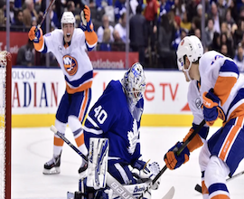
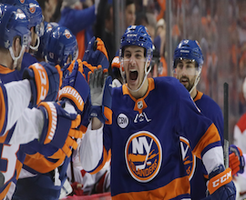
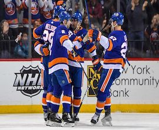
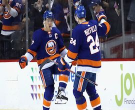

Welcome To The New York Islanders Fanpage
History
- The New York Islanders joined the National Hockey League back in 1972.
- It was hard in the beginning to gain many fans since they shared New York with the New York Rangers.
- The Islanders franchise became a dynasty when they went on to win four Stanley Cup's in a row.
- Click this link to learn more about the Islanders history!
Present
- The New York Islanders are currently 4th in the league overall and have not missed a beat coiming of an incredible 2018-2019 campaign.
- This team is coached by the best coach in the league, proof of his Jack Adams Award that he won last year.
- His name is Barry Trotz and the Islanders look like a completetly different team under his control.
- Click this link to learn more about the Islanders present!
Future
- The New York Islanders have a great prospect pool with players very close to making the next step to becoming NHL ready players.
- The Islanders also have young players on team right now that are already top tier players throughout the league.
- There is plenty to be happy for when looking into the Islanders future.
- Click this link to learn more about the Islanders future!



